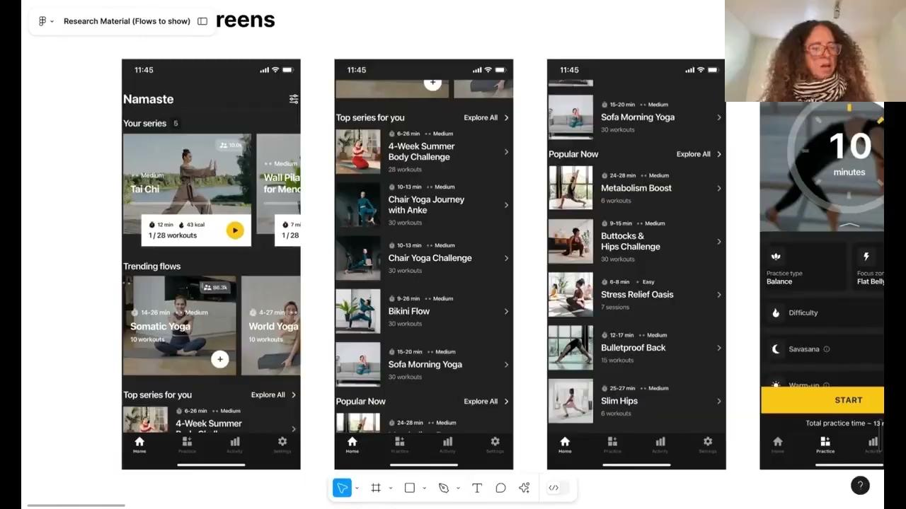

Case Study 01 · Generative Research · Welltech / Yoga Go, 2025
A mixed-methods study with 54 churned users — combining AI-conducted interviews via Heard, in-depth 1:1s, and product analytics — to understand what drives disengagement and what it takes to bring people back.
The Problem
Yoga Go had strong top-of-funnel performance but chronic early churn. The product team had quantitative signals — drop-off at day 3, day 7, day 30 — but no behavioural explanation for why.
The business question was simple: what's breaking? The research question was harder: are users leaving because of the product, their expectations, their habits, or their lives?
Methodology
Quantitative data told us when users left. Qualitative research told us why. I designed a two-phase study to triangulate both.
48 interviews conducted via Heard (AI-moderated). Rapid, scalable, consistent. Used to identify themes and segment patterns across all three user groups.
6 in-depth interviews with a purposive subsample — one from each behavioural segment, chosen to probe the most interesting tensions from Phase 1.
Users recruited and segmented by engagement level: Low-Engaged Casual (1–2 sessions), High-Engaged Casual (3+ sessions), and Power Users (1+ month).
Product analytics from the Yoga Go data team used to validate participant segmentation and contextualise qual findings against app-level behaviour data.
Research brief co-created with PM and Data leads. Three segments defined. Screener designed to ensure behavioural fidelity, not just claimed behaviour.
48 interviews run via Heard in parallel. Thematic synthesis conducted using AI-assisted coding, then human-validated by myself. Segments confirmed.
6 participants selected based on Phase 1 anomalies — users whose behaviour didn't fit the dominant pattern. These yielded the richest insights.
Findings delivered to PM, Design, Lifecycle, and Data as a cross-functional readout. Recommendations ranked by impact and feasibility.
Participants
Rather than treating all churned users the same, I segmented by depth of engagement before churn — which revealed fundamentally different failure modes.
Used once or twice, then left. Primary failure: onboarding confusion and unmet first-session expectations. Never reached the core value.
Used 3+ times before churning. Primary failure: repetitive content, no progress feedback, no motivation loop. Got to the product but lost the thread.
Used consistently for a month or more. Primary failure: no personalisation growth, content ceiling hit. Invested users who felt the product stopped growing with them.
The over-40 segment — 33/54 participants — drove the most actionable insights. Holistic wellness goals, structural guidance needs, often first-time digital fitness users.
Goal-driven, variety-seeking, app-switchers. Motivated by quick results and promotions. More likely to disengage from boredom.
Holistic wellness goals — mobility, joint health, stress. Often first-time digital fitness app users. Needed structured guidance, felt let down by generic onboarding.
Key Findings
Users answered an onboarding quiz but saw no difference in their recommendations. The promise of a personalised app delivered a generic experience. 42/54 users raised this.
Users couldn't find missed workouts, restart plans, or understand the navigation logic. Confusion after onboarding led to abandonment before value was delivered. 34/54 users struggled.
No reminders, no streak tracking, no feedback on progress. Without a pull mechanism, users simply forgot to return. 36/54 users cited this as a key disengagement driver.
After a few weeks, workouts felt identical. Power users hit a content ceiling. Casual users got bored before building habit. 30/54 users cited variety as a need.
"After I missed a couple of days, I couldn't figure out how to restart my plan, so I just gave up."Casual User, Group 1 · Female, 50
"If the app had a way to show me how well I was doing, I would've stuck with it longer."Casual User, Group 1 · Female, 50
"A quick tutorial on how to navigate the app would have made things much easier."Casual User, Group 2 · Female, 44
"The workouts weren't designed for someone with arthritis. I needed more modifications."Power User · Female, 61
Behavioural Science Layer
The findings reframed as expectation-reality gaps — a well-documented trigger for disengagement across consumer behaviour research — rather than a list of usability failures. That framing changed how the product team responded.
Marketing promised ease, personalisation, and fast results. When the product didn't match, users didn't blame themselves — they blamed the product and left.
For older users managing pain, injury, or first-time digital fitness, confusion wasn't minor friction — it was a trust failure. Structural guidance, not just UX polish.
Power users who left due to life events (travel, illness) wanted to return — but couldn't find a way back in. The product needed a re-entry ritual, not just new content.
From the product
Sessions ran remotely. Participants shared their screens — walking us through their own navigation paths, which exposed friction points no survey would have surfaced.
The navigation study revealed that 34/54 users couldn't find missed workouts or restart a plan — a critical re-entry failure visible in session recordings but invisible in analytics.

Impact · Nikki Anderson Framework
Every study should be able to answer: what changed because of this research? Here's what changed across product, strategy, and operations.
1 · Direct Product Impact
2 · Strategic Influence
3 · Operational / ResOps Impact
Running 48 interviews via Heard (AI-moderated) in parallel validated a new research workflow for the team. Turnaround from recruitment to thematic synthesis: under 2 weeks, where equivalent human-moderated studies took 6–8 weeks.
The hybrid model — AI for breadth, researcher for depth — became a template adopted across the Welltech research programme.
Reflection
The AI-conducted interviews scaled beautifully for breadth but lost nuance in emotionally loaded moments — particularly around guilt, body image, and disability. I would now design a hybrid protocol where Heard flags emotional markers for human follow-up rather than running both phases separately.
The over-40 segment also emerged as significantly larger and more complex than the brief anticipated. In retrospect, they warranted their own study strand — especially given the accessibility and disability dimension that surfaced late.
The cross-functional squad model worked extremely well. Having a PM, a data analyst, and a lifecycle marketer in the synthesis session transformed insight delivery into immediate action planning — and that's what produced the metrics.